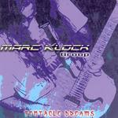

| Artist: | Marc Klock Group |
| Title: | Tentacle Dreams |
| Label: | self produced |
| Length(s): | 61 minutes |
| Year(s) of release: | 2003 |
| Month of review: | [04/2005] |
| 1) | Kaos | 3.22 |
| 2) | Mummy Dearest | 5.36 |
| 3) | Tentacle Dreams | 7.41 |
| 4) | Vibe | 6.51 |
| 5) | Swingin' | 5.17 |
| 6) | Chromophobe | 8.09 |
| 7) | Dig | 2.35 |
| 8) | Get Up | 6.12 |
| 9) | On Second Thought | 5.46 |
| 10) | Peace At Sea | 3.27 |
| 11) | Back From Mars | 7.58 |
Tentacle Dreams is a longer track, which opens with the Rhodes vibes that are ubiquitous in jazzrock. Then we arrive at a slowly plodding combination of rhythm guitar and melodic guitar soloing, with a bluesy slant. The violin also chimes in, taking over the role of the lead guitar. We end percussively.
Vibe is even a bit longer, opening with atmospherics. Dreamy keyboards, and shards of guitar lined by some nice acoustic guitar and violin set the easy gait. The melodic material is, somewhat sneakily I might add, quite good here.
Swingin' is back to the groove, a straightforward one, so this is where I tend to lose interest. I have heard all this before. The guitar is ultra-prominent here. At the end the energy level goes up and the interplay with the keyboards makes good. Somewhat. Chromophobe opens with drum rolls, but soon we are in groovy territory again. This time we have a lazy groove, the vibe provided by the organ. The melody is kinda repetitive and not so interesting either.
Dig on the other hand is up-tempo with a honky-tonk type piano. The riffing is also fast, and the electric violin comes back in. The guitar solo is even faster this time, look at those fingers go. Get Up continues at the same pace, but a bit more lightfooted and tuneful. Very percussively played, this one has some Southamerican influences.
On Second Thought is back to the thoughful, introspective vibes. Really quite subtle. Then the bass takes the lead for a bouncy intermezzo, and the melodic guitar sets in. The trumpet like keyboards are a bit too much for me. I might start thinking I am some Vegas bar instead of going home by train. The bass playing is the steady reference point. Peace At Sea has roomy percussion ticking away slowly, while the guitar lines twinkle in the back. No hurry here, and not much happening either (I do not mean here that things should be happening).
Back From Mars is the final tune here, and also one of the longer ones. Klock and Roth pull out the stops here, and show us a bit of chaos on the way back from Mars. Rowdy guitar meandering takes over then. When we arrive around the three minute mark, the music becomes more riff oriented, but the guitar sound stays quite 'noisy'. A hectic conclusion.